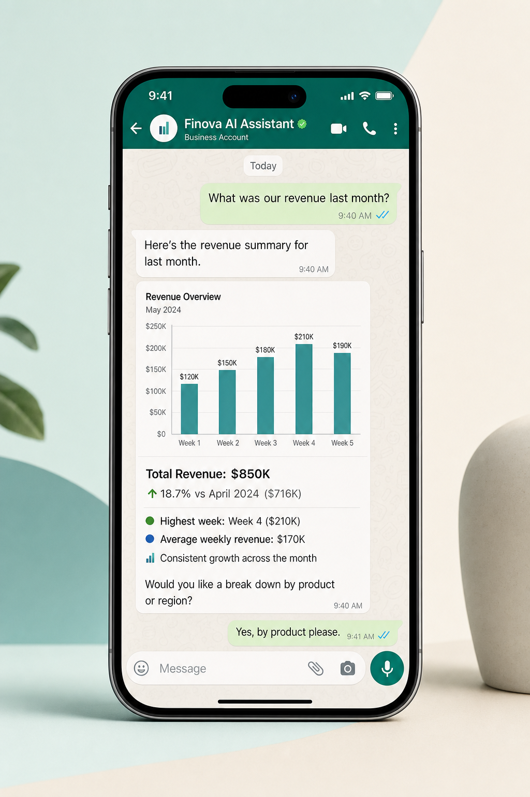

Built by Rahul Srivastava · Applied AI
Secure AI chat — web app & Telegram, scoped to your data
I built an AI chatbot inside the web application and on Telegram for mobile — both with secure, user-based access. The LLM can only read data through controlled tools; it cannot modify anything. The system is cheap to run, answers in many languages, and refuses off-topic questions.

Where you can chat
In-app AI assistant
Embedded chat inside the finance portal — authenticated users get answers tied to their role and permissions. Same security model as the rest of the platform: RBAC, session validation, audit-friendly access.
Mobile on Telegram
Leadership and authorised users can ask questions from their phone — revenue snapshots, report summaries, chart images — without opening a laptop. Identity is verified per user; unknown senders are ignored.
For non-technical readers
Think of it as a very smart colleague who can look up your company's numbers and explain them — but only if you're allowed in, only about work topics, and only by reading (never editing) the systems behind the scenes. It works in the browser and on Telegram, in multiple languages, and costs almost nothing to keep running.
How data stays safe
User-based access
Every session — web or Telegram — maps to a verified user. The bot only responds to authorised identities and respects the same permission boundaries as the dashboard.
Tool-gated LLM access
The model never gets raw database credentials. It calls scoped tools — query metrics, fetch a chart, summarise a report — with strict allowlists. It cannot write, update, or delete anything.
Topic guardrails
Off-topic questions get a polite refusal. The assistant stays on finance and operations — not general trivia, not prompt injection bait, not requests outside the user's scope.
Request flow — from question to answer
Every message passes through authentication, policy checks, and tool routing before the LLM sees any context.
-
Step 01
Authenticate
Web session or Telegram user ID matched to an allowed account.
-
Step 02
Scope check
Is the question on-topic? Does this user have permission for that data?
-
Step 03
Tool call
LLM selects from approved read-only tools — never direct SQL or write APIs.
-
Step 04
Respond
Answer in the user's language — text, numbers, or a generated chart image.
Multilingual & on-topic
Built to run cheap
Model routing, token budgets, and caching keep daily cost in the pennies — not enterprise-AI pricing — so it can stay on 24/7 without budget anxiety.
Mobile-first for leadership
Telegram means executives get visual reports and answers on the go — the same scoped intelligence as the web app, in their pocket.
MCP-style tool layer
Tool-calling architecture — the LLM requests data through a controlled interface, similar to MCP patterns, so access is explicit, auditable, and revocable.
Production guardrails
Rate limits, input sanitisation, and refusal templates for off-topic or out-of-scope requests — designed for real users, not demo chatbots.
See the finance platform this assistant plugs into — dashboards, reconciliation, and analytics are all live in this portfolio.
Open the dashboard →